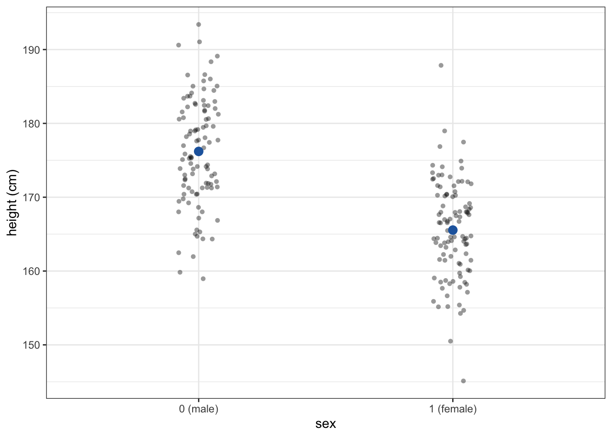
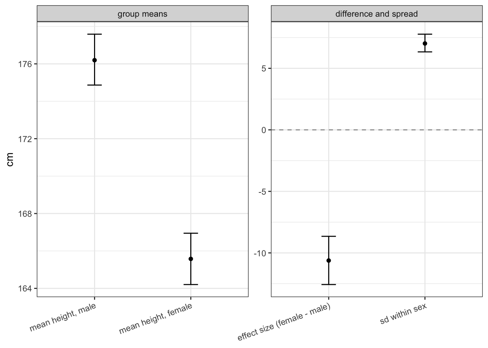
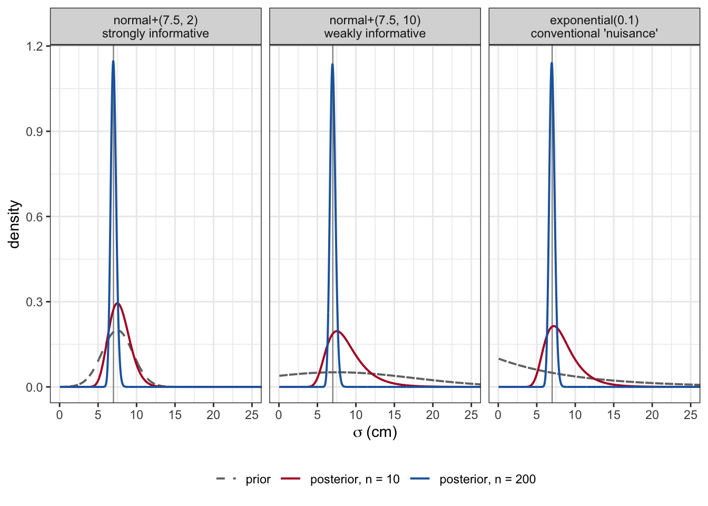
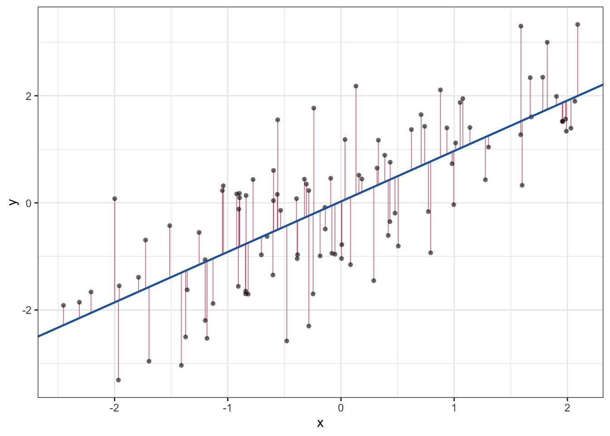
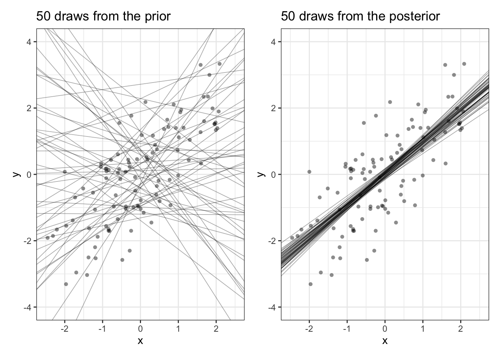
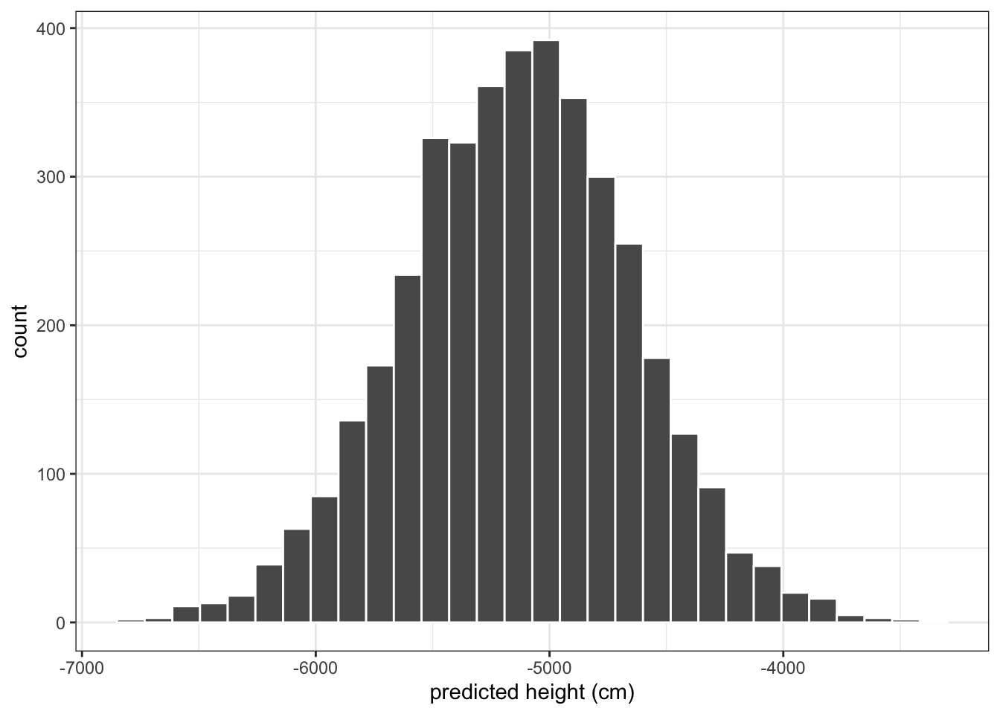
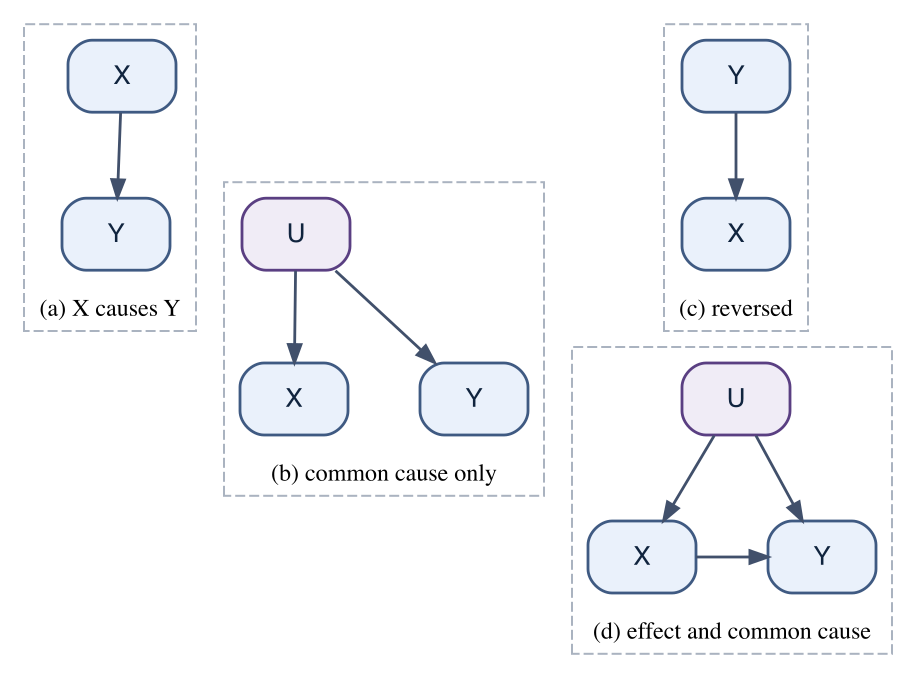
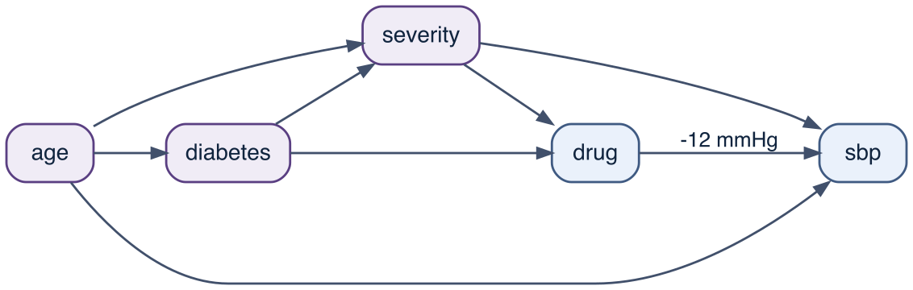

Show code
set.seed(3231)
n_per_group <- 100
height <- tibble(
female = rep(0:1, each = n_per_group),
h = c(rnorm(n_per_group, mean = 176, sd = 7),
rnorm(n_per_group, mean = 164, sd = 7))
)This chapter does two things. The first is to build the simplest regression model – one outcome, one predictor – and to say what each of its parts estimates. The second is to ask what has to be true of the world before the fitted slope answers a causal question.
The two are worth keeping apart. The model estimates a conditional mean whether or not a causal claim is in view, and the arithmetic is the same either way; what the resulting number means is settled outside the fit, by the design that produced the data and by the graph that describes it. The first part of the chapter is therefore about the machinery, and the second returns to the book’s master cohort to ask which of its questions this machinery can answer. Models with more than one predictor – adjustment, interaction, curved terms – are the subject of Chapter 21.
Let’s start by thinking once more about modelling a normally distributed continuous variable with the normal model. Writing \(y_i\) for the value measured on subject \(i\), where \(i = 1, \dots, n\) runs over all the subjects in the data:
\[ y_i \sim normal(\mu, \sigma)\]
This model has two parameters. From it we get the mean of y (\(mean = \mu\)) and the data-level sd (\(SD = \sigma\)). Note what the subscripts do and do not say: \(y_i\) carries an \(i\) because every subject has their own measured value, while \(\mu\) and \(\sigma\) do not, because the model gives every subject the same mean and the same sd. This convention – a subscript marks what is allowed to differ between observations – is worth getting used to now, because the multilevel models of Chapter 27 are built by adding subscripts to parameters that do not have them here.
But what if we want the mean of y, or the sd, to differ according to the level of some other variable, x?
Suppose we have measured each subject’s height and we also know their sex. We code male as 0 and female as 1. This 0/1 variable is not continuous, but it is numeric, and that is all the arithmetic of line-fitting requires. We want the mean height for the sex = 0 subjects and for the sex = 1 subjects.
The easiest way to do this would be to split the data by sex and run two separate models:
\[h_i \sim normal(\mu_0, \sigma_0) \quad \text{for the subjects with } sex_i = 0\]
\[h_i \sim normal(\mu_1, \sigma_1) \quad \text{for the subjects with } sex_i = 1\]
We get separate estimates from separate models, which know nothing of each other, and from these we can get an effect size with a full posterior.1
This is wasteful, however, because the female heights carry information about the male heights, and vice versa – at the very least, both groups inform the same \(\sigma\), so pooling them estimates it from twice as much data. The model that does this is called linear regression. We regress y on x.
The regression model differs from the simple \(y_i \sim normal()\) model in what it estimates. The simple model estimates the unconditional (a.k.a. marginal) distribution \(P(Y)\); the regression model estimates a conditional distribution \(P(Y \vert X = x)\), the distribution of Y among subjects who share a given value \(x\) of the predictor. We estimate the mean value of Y at pre-specified values of X.
In principle, we should strive for big models that use all our data. However, for practical reasons, we can also divide the data and run separate models. Statistics is a practical thing. If a full model is too hard to specify, to understand, or to fit, use several smaller models instead!
A regression model can be built in different ways. We could tell the model that (i) different levels of sex (the predictor) can be associated with different mean heights (the predicted variable), but the individual heights at both levels of sex must have identical sd-s; or (ii) that mean heights of both sexes must be identical, but individual heights may have different sd-s; or (iii) that both the mean heights and the sd-s of individual heights are allowed to vary by sex. Model (i) is the usual choice, so let’s start from that one.
What we model is the Y-variable (height).2
What we model Y on is the X-variable (sex).3
The model consists of two parts, the deterministic part and the stochastic part: (i) the process model gives the deterministic relationship between the mean of Y and the value of X; (ii) the likelihood says how we model the variation in the Y-variable stochastically (there is no model for variation in the X-variable – X is conditioned on, taken as given). In this book, linear models use a normal or a Student-t likelihood with an identity link. Other likelihoods – binomial, Poisson, lognormal – come with a non-identity link and belong to the GLMs (Generalised Linear Models) of the next chapter.4
The linear process model for the mean (remember: we want the mean to vary with x, but the sd to stay put) is
\[\mu_i = \alpha + \beta x_i\]
where \(\alpha\) is the intercept and \(\beta\) is the slope. This is nothing more complicated than the equation of a straight line in 2D Cartesian space. It binds the x-variable (sex) into \(\mu_i\), and in doing so redefines the single parameter \(\mu\) through two new parameters, \(\alpha\) and \(\beta\).5 So instead of \(\mu\), we will be fitting these two.
The subscripts now do some work. \(\mu_i\) carries an \(i\) because the model predicts a different mean for each subject – different, that is, whenever their \(x_i\) differs. \(\alpha\) and \(\beta\) carry no subscript, because there is one line for everybody, and \(\sigma\) carries no subscript, because there is one residual sd for everybody. Chapter 27 will be about relaxing precisely those three restrictions.
\[y_i \sim normal(\mu_i, \sigma)\]
\[\mu_i = \alpha + \beta x_i\]
or, equivalently, \(y_i \sim normal(\alpha + \beta x_i, \sigma)\), or, equivalently again,
\[y_i = \alpha + \beta x_i + \varepsilon_i, \qquad \varepsilon_i \sim normal(0, \sigma)\]
where \(\varepsilon_i\) is subject \(i\)’s residual, the vertical distance from the fitted line to the observed point. The three forms say the same thing; the third one is the one to keep in mind when we ask, below, what the model is actually doing.
We now need three priors, one each for \(\alpha\), \(\beta\), and \(\sigma\). For height in centimetres, and with sex coded 0/1, we can reason about each of them:
\[\alpha \sim normal(170, 20)\]
\[\beta \sim normal(0, 20)\]
\[\sigma \sim normal^{+}(7.5, 2)\]
The prior on \(\alpha\) says that mean male height is in the region of 170 cm, give or take a few tens of centimetres.6 The prior on \(\beta\) is centred on zero – we do not build the direction of the sex difference into the model – and its sd of 20 cm allows any difference the data could plausibly show.
The prior on \(\sigma\) deserves as much thought as the other two, and it is worth resisting the habit of treating it as a nuisance parameter to be covered by some conventional wide default. \(\sigma\) is the within-sex spread of adult height, and that is a biological quantity about which we know a great deal. National anthropometric surveys publish the full percentile distribution of adult height separately by sex, and those distributions imply a within-sex sd in the region of 7 cm; mean height varies considerably between populations and across birth cohorts, but the within-sex spread is much more stable.7 A study reporting a within-sex sd of 2 cm, or of 25 cm, would be reporting a measurement failure rather than a discovery. Note the asymmetry this creates between the parameters: we are less certain about \(\alpha\) – which population is this, and from which birth cohort? – than about \(\sigma\), which is the reverse of the way the two are conventionally treated. The notation \(normal^{+}\) denotes a normal distribution truncated at zero (brms does this automatically for parameters that must be positive, so prior(normal(7.5, 2), class = "sigma") is what you write), which respects the constraint that an sd cannot be negative.
There is a real choice to be made here, and it is not between “informative” and “uninformative” priors. It is between a weakly informative prior, appropriate when we expect the data to dominate, and a strongly informative one, appropriate when we hold prior information comparable to or better than what the data carry. Once the model is fitted, the callout at the end of this section works the comparison through on these data.
Now we simulate the data the story describes: 100 men and 100 women, with mean heights of 176 and 164 cm and an sd of 7 cm in both groups.
set.seed(3231)
n_per_group <- 100
height <- tibble(
female = rep(0:1, each = n_per_group),
h = c(rnorm(n_per_group, mean = 176, sd = 7),
rnorm(n_per_group, mean = 164, sd = 7))
)
The realised group means are 176.2 cm and 165.5 cm, a difference of about 10.7 cm, which is roughly 1.5 within-group sd-s. Figure 21.1 shows what a difference of that size looks like: the means are clearly apart, but the distributions overlap heavily, and a randomly chosen woman is taller than a randomly chosen man about 14% of the time. Keep this picture in mind – “the sexes differ in mean height by 11 cm” and “you can tell someone’s sex from their height” are very different claims, and only the first is what the model estimates.
We fit the model in brms:
m_height <- brm(
h ~ female,
data = height,
family = gaussian(),
prior = c(prior(normal(170, 20), class = "Intercept"),
prior(normal(0, 20), class = "b"),
prior(normal(7.5, 2), class = "sigma")),
file = "models/m_height", file_refit = "on_change"
) Estimate Est.Error Q2.5 Q97.5
b_Intercept 176.196097 0.6978166 174.865974 177.586755
b_female -10.619829 0.9818738 -12.570950 -8.652620
sigma 7.017995 0.3619221 6.335516 7.774166Intercept is \(\alpha\): the estimated mean height in the group coded 0, i.e. the men.
female is \(\beta\): the estimated difference in mean height between the group coded 1 and the group coded 0, i.e. the effect size.
sigma is \(\sigma\): the sd of individual heights within a sex. Compare it with the sd we simulated, 7 cm.
The mean of the second group is then \(\alpha + \beta\), and the \(\beta\) coefficient is our estimate of the difference between the groups.8 Here \(\beta\) is negative, because we coded women as 1 and they are shorter. Note that the fitted \(\beta\), -10.62 cm, is not the value we simulated (-12 cm): the model estimates the difference in this sample, and the sample was drawn with error. The posterior sd of 0.98 cm is the model’s own account of how far off it might be.

The interpretation of the two coefficients does not depend on the predictor being a 0/1 dummy. In general:
The intercept is the expected value of Y when x = 0, or \(E(Y \vert X = 0)\).
The slope is the change in the expected value of Y when we increase X by one unit.
Because this is linear regression, it makes no difference where on the x-axis that one-unit change happens: every one-unit increase in X buys the same \(\beta\)-sized change in the predicted mean Y.
Three candidate priors for the within-sex sd of height, and what each one claims before seeing data:
| prior | claim about \(\sigma\) | P(\(\sigma <\) 1 cm) | P(\(\sigma >\) 20 cm) |
|---|---|---|---|
| \(1/\sigma\) (Jeffreys)9 | improper; scale-invariant, no claim | undefined | undefined |
| \(exponential(0.1)\) | mean 10 cm, median 6.9 cm | 0.095 | 0.135 |
| \(normal^{+}(7.5, 10)\) | around 7.5 cm, very loosely | 0.040 | 0.137 |
| \(normal^{+}(7.5, 2)\) | around 7.5 cm, within a few cm | 0.0005 | \(2 \times 10^{-10}\) |
The two proper “let the data speak” choices assign something like a one-in-twenty to one-in-ten chance to a population in which adult heights within a sex vary by less than a centimetre, and about a one-in-seven chance to one in which they vary by more than 20 cm. Neither is a biological possibility. This is what treating \(\sigma\) as a nuisance costs: not bias, usually, but a declared state of ignorance we do not actually hold. Note also that widening a \(normal^{+}\) prior does not only add mass at the top – 23% of the untruncated \(normal(7.5, 10)\) lies below zero, and truncation redistributes that mass over the positive line, so a “vague” prior on a positive parameter concentrates more probability near zero than one might intend.
Figure 21.3 fits the height model under three of these priors, at the full n = 200 and at a subsample of n = 10.

Posterior mean for \(\sigma\), with 95% credible interval:
| prior | n = 200 | n = 10 |
|---|---|---|
| \(normal^{+}(7.5, 2)\) | 7.02 (6.37, 7.74) | 7.83 (5.45, 10.76) |
| \(normal^{+}(7.5, 10)\) | 7.00 (6.35, 7.74) | 8.81 (5.31, 15.01) |
| \(exponential(0.1)\) | 6.99 (6.34, 7.72) | 8.38 (5.15, 14.18) |
| \(1/\sigma\) (Jeffreys) | 6.98 (6.33, 7.72) | 8.34 (5.08, 14.42) |
Two conclusions, and they pull in different directions.
At n = 200 the choice is irrelevant: the four posterior means span 0.03 cm and the interval limits agree to within 0.04 cm. Whoever is estimating \(\sigma\) from 200 observations may use whatever prior they like – the likelihood has overwhelmed all four.
At n = 10 the choice moves the answer. The strongly informative prior returns 7.8 cm with an upper limit of 10.8; the weak priors return 8.3 to 8.8 cm with upper limits from 14.2 to 15.0. Note which direction the weak priors err in: the subsample happens to have a residual sd of 7.5 cm, and the weak priors push the estimate up from there, because with 8 residual degrees of freedom the likelihood for \(\sigma\) is right-skewed and a diffuse prior does nothing to restrain the upper tail. Which answer is better depends on a question the arithmetic cannot settle: is 7.5 \(\pm\) 2 cm a fair summary of what we knew beforehand? For within-sex adult height it is, comfortably, and then the informative prior is not a thumb on the scale but the correct use of available information – it is the weak prior that misrepresents our state of knowledge. For a quantity we genuinely know little about, the same prior would be an unjustified constraint. The judgement is substantive and belongs in the methods section, not in a default.
A caution about improper priors. The Jeffreys prior \(p(\sigma) \propto 1/\sigma\) is improper: its integral over \((0,\infty)\) diverges, so it is not a probability distribution and cannot be drawn from. Posterior estimation may still work – multiply an improper prior by a likelihood and the product is often a perfectly good normalisable posterior, which is why improper priors survive in Bayesian practice. But a prior predictive check requires drawing parameters from the prior and simulating data, and there is nothing to draw from. This is a practical reason to prefer proper priors quite apart from the philosophical ones: the prior predictive check is the main tool for noticing that a prior implies absurdities, and an improper prior makes that check unavailable. Chapter 9 returns to prior predictive simulation.
It is worth being explicit about what the fitting procedure is looking for, because \(\sigma\) is a parameter of the model and not a summary statistic computed afterwards.
The process model \(\mu_i = \alpha + \beta x_i\) assigns each subject a predicted mean. The residual is what is left over,
\[\varepsilon_i = y_i - \mu_i = y_i - (\alpha + \beta x_i)\]
and the likelihood \(\varepsilon_i \sim normal(0, \sigma)\) says that these leftovers are normally distributed around zero with sd \(\sigma\). Since the normal density falls off with the square of the distance from its mean, the log-likelihood of the data contains the term \(-\sum_i \varepsilon_i^2 / 2\sigma^2\): a line is more probable, given the data, when the sum of its squared residuals is smaller. This is where “least squares” comes from – in this particular model, the line that maximises the normal likelihood is also the line that minimises the sum of squared residuals. It is a consequence of choosing a normal likelihood, not a separate principle, and it stops being true as soon as the likelihood changes (which is why a Student-t likelihood is more tolerant of outliers: its tails are heavier, so a distant point is not penalised by the full square of its distance).
Figure 21.4 draws the residuals for a continuous predictor.
To draw them we need a continuous predictor, so we simulate one: x is 100 draws from \(normal(0,1)\), and y is x plus \(normal(0,1)\) noise, so the true intercept is 0, the true slope is 1, and the true \(\sigma\) is 1. (Only x has an sd of 1; y, being a sum of two such variables, has an sd of about 1.4.)
set.seed(2)
xy_data <- tibble(x = rnorm(100))
xy_data$y <- xy_data$x + rnorm(100)m_xy <- brm(
y ~ x,
data = xy_data,
prior = c(prior(normal(0, 1), class = "Intercept"),
prior(normal(0, 1), class = "b"),
prior(normal(1, 1), class = "sigma")),
file = "models/m_xy", file_refit = "on_change"
)
Two things follow from the picture, and both are worth naming because they are used later in the book.
\(\sigma\) is the spread of y conditional on x, not the marginal spread of y. In the height model, sd(height) over all 200 subjects is 8.8 cm, while the fitted \(\sigma\) is 7 cm. Both numbers are spreads of individual heights; what differs is what is held fixed. Taken one sex at a time the heights have sd-s of 7.3 and 6.6 cm, and the fitted \(\sigma\) is the pooled version of those two, because model (i) constrains them to be equal. The marginal sd is the larger number because it also contains the 10.7 cm gap between the group means: with two equally sized groups differing in mean by \(\Delta\), \(\mathrm{var}(y) \approx \sigma^2 + (\Delta/2)^2\), which here gives 8.8 cm. So \(\sigma\) has not stopped being variation in height. It is the variation in height that remains among people of the same sex – the same quantity the prior on \(\sigma\) was reasoning about earlier in this chapter, where published percentile distributions gave a within-sex sd in the region of 7 cm.
What is model-relative about \(\sigma\) is the conditioning set, not the fact that it describes y. Add a predictor that carries information about height and \(\sigma\) falls; add one that carries none and it does not. Two models of the same outcome therefore report \(\sigma\)-s that are spreads of different conditional distributions, so a smaller \(\sigma\) in one model is not the same quantity measured better – it is a different quantity. The descent also has a floor, set by measurement error and by whatever person-to-person variation no available predictor addresses. Within a correctly specified model \(\sigma\) estimates that residual variation and is a substantive quantity, of the kind a prior can be elicited for; in a misspecified model it also absorbs the structure the process model has got wrong, and then it is not interpretable as anything in particular.
\(R^2\) is that comparison expressed as a proportion. It is the share of the variance in y that the fitted values reproduce,
\[R^2 = \frac{\mathrm{var}(\mu_i)}{\mathrm{var}(y_i)} = 1 - \frac{\mathrm{var}(\varepsilon_i)}{\mathrm{var}(y_i)}\]
so \(R^2 = 0\) means the predictors tell us nothing beyond the grand mean, and \(R^2 = 1\) means the residuals have vanished. For the height model \(R^2\) is about 0.37: knowing someone’s sex removes roughly that share of the variance in height, and the rest – most of it – is individual variation the model cannot address. \(R^2\) answers a predictive question and it is not a measure of how good a causal model is; a correctly specified causal model can have a small \(R^2\), and a model full of colliders and mediators can have a large one. Chapter 26 takes up prediction as a goal in its own right.10
Galton’s law of regression. The method is named after a causal claim about heredity that turned out to be a statistical artifact of imperfect correlation. Francis Galton worked on sweet peas, reporting to the Royal Institution in 1877 that large seeds gave smaller offspring and small seeds larger ones, and then on people. Offering prizes for family records, he then obtained the heights of 930 adult children and of their 205 parentages, rescaled the female heights to male equivalents, and compared each child with the mid-parent, the average of the two parents. The child’s deviation from the population mean was on average about two-thirds of the mid-parent’s. Galton called this regression towards mediocrity, and he took it to be a fact of inheritance: his stated object was to establish “a simple and far-reaching law that governs the hereditary transmission” of ordinary traits.11
The evidence against that causal reading is in Galton’s own paper. Reading his table down the columns instead of across the rows, he found that the most probable mid-parentage of a man of a given height deviates only about one-third as much from the mean as the man himself does. Regression runs backwards in time as well as forwards. No causal process can pull children towards mediocrity and simultaneously pull their parents towards it, so what produces the pattern is not a physical process at all. Stigler’s history follows both the discovery and the persistent misreadings that followed it.12
What regression to the mean is. For any two variables standardised to mean 0 and sd 1 with correlation \(r\), the conditional mean is \(E[Y \mid X = x] = rx\). Whenever \(|r| < 1\), units selected because their \(x\) is extreme have an expected \(y\) closer to the mean, and the shrinkage is larger the weaker the correlation. It requires only conditioning on an extreme value of a variable that is measured with error, or that predicts the second measurement imperfectly. Nothing has to happen to the units in between. Chapter 2 lists it among the misreadings of randomness for this reason: the pattern invites a causal explanation and does not need one.
The regression fallacy. Horace Secrist spent a decade documenting that the most profitable firms in an industry became less exceptional over the following years, and that the least profitable became less exceptional too, and published the result in 1933 as The Triumph of Mediocrity in Business: a law by which competition erodes excellence. Harold Hotelling’s review showed that the finding was a consequence of grouping firms by their initial rank, present in any data with imperfect year-to-year correlation, and evidence of no economic tendency whatever.13
Placebo-controlled experiments. The clinical version of Secrist’s error has a name – the placebo effect. Trials recruit on an extreme value: blood pressure above a threshold, a pain score above a cut-off, an abnormal laboratory result. That is selection on the baseline measurement of the outcome, so the follow-up measurement regresses towards the mean in every arm, treated and untreated alike, regardless of any treatment. The within-arm change from baseline in the placebo group is therefore a sum of regression to the mean, natural history, measurement error and any genuine psychological response, and the treatment-placebo comparison cannot separate them. McDonald and colleagues argued that most of the improvement attributed to placebo is statistical regression: across a series of trials, whose design protected against regression to the mean, the median placebo-arm change was 0.3%, while for 15 biochemical tests selecting patients three sd above the mean produced improvements from regression to the mean alone of between 2.5% (serum sodium) and 26% (lactate dehydrogenase).14
The large placebo effect entered the literature from Beecher’s 1955 paper, which reported that about 35% of 1082 patients in 15 trials were satisfactorily relieved by placebo.15 Kienle and Kiene reanalysed the same 15 trials and found no evidence of a placebo effect in any of them; the reported improvements were accounted for by spontaneous improvement, fluctuation of symptoms, regression to the mean, additional treatment, scaling bias and a list of similar artefacts.16
The design point. A placebo arm identifies the treatment effect, not the placebo effect. Both arms are recruited on the same extreme baseline and both regress by the same amount, so the randomised between-arm contrast is unaffected – this is part of what randomisation buys, and it is why the placebo control is a good design even though the quantity people read off the placebo arm is not the one they think. Identifying a placebo effect requires a third arm that receives no treatment at all. Hróbjartsson and Gøtzsche assembled the trials that have one: in the current version of that review, 202 trials across 60 clinical conditions, placebo versus no treatment gave a pooled relative risk of 0.93 (95% CI 0.88 to 0.99) for binary outcomes and a standardised mean difference of -0.23 (-0.28 to -0.17) for continuous ones, with the effect concentrated in patient-reported outcomes, principally pain and nausea, and larger in small trials.17 Something is there, but it is far smaller than the Beecher tradition claimed, and it is not what a placebo arm on its own measures. (The device itself is older than modern clinical trials: blind assessment and placebo controls were in use well before the twentieth-century trial.18)
The placebo effect as usually reported is thus a pseudo-causal reading of regression to the mean – a change with no intervention behind it, given the name of an intervention, and then attributed to a mechanism (expectation, the healing power of the physician) that the design cannot identify.
What to do about it. The problem is created at the design stage and is best solved there. Do not select subjects on the same measurement that supplies the baseline; use an independent screening measurement, or average several. Where selection on baseline is unavoidable, analyse the follow-up value with baseline as a covariate rather than analysing change scores within the selected group, and keep a randomised control arm so that the regression is common to both. Barnett and colleagues set out the design and analysis options.19
This section has now stated three things that look separate. \(\sigma\) is the spread of y once x is known. \(R^2\) is the share of the variance in y that is explained by x. Regression to the mean shrinks a selected (individual) deviation by a factor. These are really a single statement, and the shortest way to see that is to count information.
The identities. Take a jointly normal pair \((X, Y)\) with correlation \(r\), and standardise both to mean 0 and sd 1. Three quantities follow from the joint distribution alone:
\[E[Y \mid X = x] = r\,x, \qquad \sigma_{Y \mid X} = \sigma_Y \sqrt{1 - r^2}, \qquad I(X;Y) = -\tfrac{1}{2}\ln(1 - r^2)\]
The third is the mutual information between X and Y, the average amount by which knowing one reduces uncertainty about the other; in nats if the logarithm is natural, in bits if it is base 2.20 Combining the second and third gives the compact form:
\[\frac{\sigma_{Y \mid X}}{\sigma_Y} = e^{-I(X;Y)}, \qquad r = \sqrt{1 - e^{-2I(X;Y)}}, \qquad R^2 = 1 - e^{-2I(X;Y)}\]
The conditional spread shrinks by \(e^{-I}\) and the conditional mean retains the fraction \(r\) of the deviation. Both are functions of the same single number: how much the predictor tells you about the outcome. When it tells you nothing, \(I = 0\), \(\sigma_{Y\mid X} = \sigma_Y\) and the best prediction for anybody is the grand mean – regression to the mean is total. When it tells you everything, \(I \to \infty\), \(r \to 1\), and there is none.
On the two models in this chapter. For the height model, \(\sigma\) is 7 cm against an sd of 8.8 cm, a ratio of 0.8, so \(I = -\ln(0.8)\) = 0.22 nats, or 0.32 bits: knowing a person’s sex is worth about a third of a bit about their height, and a third of a bit is what takes the sd from 8.8 to 7 cm. The simulated data of Figure 21.4 were built with a true slope of 1 and equal signal and noise variances, so there \(r = 1/\sqrt{2}\) and \(I\) is exactly half a bit. Select the subjects at \(x = +2\), two sd above the mean of x, and the y they are expected to have is \(2/\sqrt{2} = 1.41\) sd above the mean of y. The deviation has been multiplied by \(r\), and the half-bit is why.
Why “information” and not “entropy”. Conditioning does not increase anything. \(H(Y \mid X) \le H(Y)\), and the deficit is precisely \(I(X;Y)\), so the operation removes uncertainty rather than generating it. Mutual information is also symmetric, \(I(X;Y) = I(Y;X)\), which is the formal statement of what Galton found when he read his table by columns instead of rows. Reading regression to the mean as an entropy-like tendency of things to drift towards the middle would put back the directional, process language the previous callout removed, and it would put it back under a name that sounds like physics.
The symmetry also explains why Galton’s two coefficients are not reciprocals. With independent parents of equal variance a mid-parent average has half the variance of an individual, so the forward slope \(r\,\sigma_{\text{child}}/\sigma_{\text{mid}}\) is twice the backward slope \(r\,\sigma_{\text{mid}}/\sigma_{\text{child}}\) – which is what \(\tfrac{2}{3}\) and \(\tfrac{1}{3}\) are. Their geometric mean, \(\sqrt{2/3 \times 1/3} \approx 0.47\), is the correlation itself, since the product of the two slopes is \(r^2\). The asymmetry is a fact about variances, not about heredity.
What maximum entropy does explain. Not the shrinkage, but its linear form. Given only a mean and a variance, the maximum-entropy joint distribution is the normal one (Chapter 7), and its conditional expectation is a straight line with slope \(r\). The line of this chapter is therefore the least-committal model of a conditional mean available to someone who claims to know second moments and nothing else. Shrinkage towards the mean would still occur under other joint distributions; a constant shrinkage factor would not.
Limits of the clean statement. Outside the normal and the other elliptical families the tidy version fails. Schmittlein showed that for commonly used probability mixture models conditional expectations regress not to the mean but to some other value, and that the usual corollary – units starting at the mean are expected to stay there – is false in general.21 Samuels proposed the weaker reversion toward the mean, a shift in the conditional expectation of the upper or lower portion of a distribution, as the property that does hold widely.22 Two further restrictions are worth stating. The inequality \(H(Y \mid X) \le H(Y)\) holds on average over x; for a particular value of x the conditional entropy can exceed the marginal one. And the whole account is about standardised deviations: where the variance grows over time, a raw deviation can widen while the standardised one shrinks.
The chapter has declared three priors and then fitted the model without showing what the priors are. The clearest way to see a prior on a regression is to draw the lines it believes in, before any data are seen.
The model of Figure 21.4 was fitted with \(\alpha \sim normal(0,1)\), \(\beta \sim normal(0,1)\), and \(\sigma \sim normal^{+}(1, 1)\). All three are deliberately weak here, which is the appropriate choice for a change of reason rather than of habit: these are abstract simulated variables with no units and no literature behind them, so unlike the height example there is no external knowledge to encode. Drawing 50 \((\alpha, \beta)\) pairs from those priors and plotting the corresponding lines gives the left panel of Figure 21.5; the right panel does the same with 50 draws from the posterior after fitting.

Three things to read off the right-hand panel.
First, the posterior is not a line but a cloud of lines. Every draw is a different \((\alpha, \beta)\) pair that the data leave plausible, and any quantity we compute from the model should be computed from all of them, not from the posterior mean alone.
Second, the fan is narrowest near the mean of x and widens away from it. This is not an accident of the drawing. The posterior sd of the fitted mean at a predictor value \(x\) is proportional to
\[\sqrt{\frac{1}{n} + \frac{(x - \bar{x})^2}{\sum_i (x_i - \bar{x})^2}}\]
which is minimised at \(x = \bar{x}\) and grows with the distance from it. Uncertainty about the slope has to pivot the line about somewhere, and it pivots about the centre of the data. (For a single least-squares fit the statement is stronger: the one OLS line passes through the centroid \((\bar{x}, \bar{y})\). For a posterior cloud of lines there is no such common point – only a narrow waist near \(\bar{x}\).) In this sample \(\bar{x}\) is -0.03 and \(\bar{y}\) is 0; both are near, but not equal to, the zero we simulated from.
Third, x runs from about -2.5 to 2.1, and outside that span the fan keeps widening with nothing to check it. Whether it makes sense to predict mean y beyond the range of the x data is a scientific question, not a statistical one – relations in nature are rarely linear beyond a short range, if that. We do not use linear regression because we think the world is linear; we use it because it is convenient and its coefficients are easy to interpret. It often works anyway, which is the interesting part.
The height model’s predictor is a dummy: it takes the values 0 and 1 and nothing else. The fitting machinery does not know that. It will happily extrapolate the line, so we can ask it for the expected height of someone whose female = 500. There is no technical obstacle: we substitute 500 for \(x_i\) in \(\mu_i = \alpha + \beta x_i\), once for each posterior draw, and get a full posterior for the prediction.
pred_500 <- post_h$b_Intercept + post_h$b_female * 500
The posterior in Figure 21.6 is centred on about -5 130 cm – a negative height, some 30-fold the size of a real one – with a posterior sd of about 490 cm. The extrapolation is nonsense, but note why. It is not that linear extrapolation is always nonsense, and it is not that the arithmetic failed. It is that female = 500 does not name anything. A dummy variable has two values, and the model’s slope is not a rate of change along a scale but the gap between two groups. Asking for the fitted value at 500 is asking a question in units the variable does not have.
When the predictor is genuinely continuous, the same extrapolation is a real scientific claim rather than a category error – and then the constraint is the one from the previous section: the model has no information beyond the range of the data, says so through a widening interval, and cannot tell you whether linearity survives out there.
The reference level. A 0/1 predictor standing for a category is a dummy, or indicator, variable. The level coded 0 is its reference level: \(\alpha\) is the mean of that level, and \(\beta\) is the difference from it. Nothing in the data decides which level plays that part. In the height model female = 0 makes the men the reference; coding male \(= 1 -\) female instead would make the women the reference.
Swapping the reference re-parameterises the model without changing it.
height_swap <- mutate(height, male = 1 - female)
m_height_male <- brm(
h ~ male,
data = height_swap,
family = gaussian(),
prior = c(prior(normal(170, 20), class = "Intercept"),
prior(normal(0, 20), class = "b"),
prior(normal(7.5, 2), class = "sigma")),
file = "models/m_height_male", file_refit = "on_change"
)| parameterisation | intercept (cm) | slope (cm) | sigma (cm) | R-squared |
|---|---|---|---|---|
| men as reference (female = 1) | 176.20 | -10.62 | 7.02 | 0.37 |
| women as reference (male = 1) | 165.57 | 10.61 | 7.01 | 0.37 |
| first fit, transformed draw by draw | 165.58 | 10.62 |
The intercept moves from the male mean to the female mean and the slope changes sign; \(\sigma\), \(R^2\) and every fitted value are unchanged, because the two models describe the same two group means. Note the third row: the second fit was not needed. The swapped parameterisation is a linear function of the posterior already in hand – \(\alpha' = \alpha + \beta\) and \(\beta' = -\beta\), applied draw by draw – and it reproduces the refit to within Monte Carlo error. What a coding choice changes is which contrasts appear as parameters, not what the model says.
More than two categories. A categorical predictor with \(k\) levels enters as \(k - 1\) dummies alongside the intercept. R constructs them from a factor automatically; model.matrix() shows what was built.
g_demo <- data.frame(g = factor(c("A", "B", "C", "A")))
model.matrix(~ g, data = g_demo) (Intercept) gB gC
1 1 0 0
2 1 1 0
3 1 0 1
4 1 0 0
attr(,"assign")
[1] 0 1 1
attr(,"contrasts")
attr(,"contrasts")$g
[1] "contr.treatment"Level A has become the reference – alphabetically first, unless the factor’s levels were ordered otherwise – and the two columns gB and gC are the differences from it. The intercept is A’s mean; B’s mean is \(\alpha + \beta_{gB}\), and B and C differ by \(\beta_{gC} - \beta_{gB}\).
Why \(k - 1\) and not \(k\). Indicators for all \(k\) levels sum to 1 in every row, which is the intercept column, so the design matrix is collinear and the parameters are not identified: infinitely many \((\alpha, \beta_1, \dots, \beta_k)\) give the same \(\mu_i\). Dropping the intercept instead resolves this the other way and gives the cell-means parameterisation, one coefficient per level, each of which is that level’s mean rather than a difference:
model.matrix(~ 0 + g, data = g_demo) gA gB gC
1 1 0 0
2 0 1 0
3 0 0 1
4 1 0 0
attr(,"assign")
[1] 1 1 1
attr(,"contrasts")
attr(,"contrasts")$g
[1] "contr.treatment"This is a genuinely different way to write the same model, and it is sometimes the more convenient one – the interaction models of Chapter 21 use the distinction.
The coding is not innocuous once there are priors. In a frequentist fit the parameterisation is bookkeeping. In a Bayesian fit the priors are placed on the parameters, so what a prior asserts depends on which contrasts the parameters are. Under R’s default treatment contrasts, a single prior(normal(0, s), class = "b") is a statement about how far each level is from the reference level; the implied prior on the difference between two non-reference levels is then \(normal(0, s\sqrt{2})\), so the reference level is treated asymmetrically for no substantive reason. Sum-to-zero contrasts (contr.sum) make the coefficients deviations from the mean of the level means, and the same shared prior is then symmetric across levels – but the intercept now means something else, which the prior on it has to match (see the note on brms’s internal centring earlier in this chapter). With more than a handful of levels, neither fixed-dummy scheme is really what one wants: the natural move is a hierarchical prior whose scale is estimated from the levels themselves, which is Chapter 27.
Two things not to do. An ordered category coded 1, 2, 3 and entered as a continuous predictor asserts that the steps between adjacent categories are equal and additive, which is rarely intended; brms provides mo() for monotonic effects that keep the ordering without fixing the spacing.23 And do not cut a continuous variable into categories in order to avoid assuming a shape: that discards information and leaves the within-category variation unadjusted, which is the argument of Chapter 21 against categorising age.
At the reporting stage none of this matters. Because the book’s convention is to report effects as contrasts of model predictions, avg_comparisons(m_height, variables = "female") returns the same difference in mean height whichever coding produced the fit. The coding question belongs to model specification and prior setting, not to the answer.
Everything so far has been about a conditional distribution. The fitted model describes \(P(Y \vert X = x)\), the distribution of the outcome among the subjects who have the value \(x\). A causal question asks about something else: the distribution of the outcome that would be observed if \(x\) were set for everybody, written \(P(Y(x))\) in the potential-outcome notation of Chapter 10. The first is a statement about a subgroup of the population as it is. The second is a statement about a population that has been intervened on.
A fitted regression can be made to answer the second kind of question, by being used in a particular way. Take the fitted model, overwrite every subject’s predictor with the value \(x\), predict each subject’s mean, and average those predictions. Repeat at a second value \(x'\), and take the difference of the two averages. Substitute, predict, average, contrast: that operation is standardisation, or g-computation, the same procedure carried out by hand over strata in Chapter 12, and it is what converts a model of \(E[Y \vert X]\) into an estimate of \(E[Y(x)] - E[Y(x')]\). Chapter 28 carries it out with a full posterior. It is the reason a regression is worth fitting in a causal analysis at all.
In the one-predictor model of this chapter the operation is arithmetically trivial. With \(\mu_i = \alpha + \beta x_i\), the average prediction when everyone is assigned \(x = 1\) is \(\alpha + \beta\); the average prediction when everyone is assigned \(x = 0\) is \(\alpha\); the contrast is \(\beta\), whatever the subjects were actually like. The slope is the model’s counterfactual contrast.
That is a special case and not a general fact. It holds because the process model is linear and has no other predictors, and it fails as soon as either condition goes – Chapter 21 for further predictors, Chapter 24 for a non-identity link. The book’s convention is to obtain effects as contrasts of model predictions rather than by reading coefficients, and the tool for it is the marginaleffects package. Here the two coincide, which makes this a good place to see them coincide before relying on the machinery elsewhere.
Whether the contrast is the causal contrast is a separate question, and the model has no view on it. The rest of the chapter is about that question.
The book’s master cohort (Chapter 10) asks whether a blood-pressure-lowering drug prevents stroke. Stroke is binary and belongs to Chapter 24, but the cohort contains a continuous outcome on the way there: post-baseline systolic blood pressure, sbp. The drug lowers it, and in the simulation it lowers it by the same amount in every patient, so the answer key for this chapter is a single number.
df <- simulate_cohort(n = 50000, seed = 2024)
df$age_c <- (df$age - 62) / 10 # age in decades, centred at 62
oracle <- attr(df, "oracle") # the answer key
p_true <- attr(df, "params") # the DGP's own coefficients
# every patient's blood pressure under treatment and under no treatment
ate_sbp <- mean(oracle$sbp1 - oracle$sbp0)The true average causal effect of the drug on systolic pressure is -12 mmHg. Now the regression, with priors reasoned about as before: the cohort is defined by hypertension, so mean pressure is in the region of 140 mmHg and individual pressures are spread over a band of a few tens of mmHg; a blood-pressure drug that moved pressure by more than about 40 mmHg would be a different kind of intervention.
m_sbp_crude <- brm(
sbp ~ drug,
data = df,
family = gaussian(),
prior = c(prior(normal(140, 15), class = "Intercept"),
prior(normal(0, 20), class = "b"),
prior(normal(15, 7), class = "sigma")),
file = "models/m_sbp_crude", file_refit = "on_change"
) Estimate Est.Error Q2.5 Q97.5
b_Intercept 140.953893 0.07455789 140.811485 141.104515
b_drug -2.889758 0.09975002 -3.086738 -2.692659
sigma 10.877693 0.03387319 10.812475 10.945241The fitted slope is -2.89 mmHg, with a posterior sd of 0.100. The substitute-predict-average operation returns the same number, as it must in this model:
avg_comparisons(m_sbp_crude, variables = "drug")
Estimate 2.5 % 97.5 %
-2.89 -3.09 -2.69
Term: drug
Type: response
Comparison: 1 - 0So the model has answered its own question accurately. Among the treated, mean systolic pressure is about 2.9 mmHg lower than among the untreated, and with 50 000 patients that contrast is pinned down to a tenth of a mmHg. It is also wrong about the drug by a factor of 4.2. The arithmetic is not at fault; the question is.
Figure 21.7 shows four causal structures. In every one of them, a regression of Y on X returns a non-zero slope, and in every one of them the slope means something different.

The fit cannot distinguish them because the arithmetic it performs is symmetric in X and Y. Regressing y on x in the simulated data of Figure 21.4 gives one slope; regressing x on y gives another; both are perfectly good fits of a conditional mean.
m_yx <- brm(
x ~ y,
data = xy_data,
prior = c(prior(normal(0, 1), class = "Intercept"),
prior(normal(0, 1), class = "b"),
prior(normal(1, 1), class = "sigma")),
file = "models/m_yx", file_refit = "on_change"
)The forward slope is 0.943 and the reverse slope is 0.582; their product, 0.549, is close to the squared correlation, 0.558. (With flat priors the two would be equal; the small gap is the shrinkage the \(normal(0,1)\) priors apply to both slopes.) This is the same fact the earlier callouts recorded twice: Galton found regression towards the mean whether he read his table across the rows or down the columns, and mutual information is symmetric, \(I(X;Y) = I(Y;X)\). Association has no direction. The direction comes from the graph, and the graph comes from substantive knowledge about how the data were generated – which variable was set first, which could not possibly have caused which.
So the sequence is: state the estimand, draw the graph, check whether the graph identifies the estimand from the available variables, and only then fit. The regression supplies a number for a quantity chosen beforehand. It does not choose the quantity.
Figure 21.8 is the part of the cohort’s graph that matters for this question. The drug lowers blood pressure, which is structure (a). But treatment was not assigned at random: sicker patients were more likely to be treated, and severity also raises blood pressure directly, which adds structure (d). Age contributes in the same way at one remove – it raises severity, and it raises blood pressure directly – and so does diabetes, which raises severity and raises the chance of treatment. The crude slope is therefore the sum of an effect and a set of back-door contributions.

For a linear structural equation the contribution of each back-door variable can be written down. If the truth is \(E[Y \vert A, L_1, \dots, L_K] = \gamma_0 + \tau A + \sum_k \gamma_k L_k\) and we regress Y on A alone, the slope we get is
\[\beta_{\text{crude}} = \tau + \sum_{k=1}^{K} \gamma_k \, \delta_k, \qquad \delta_k = E[L_k \vert A = 1] - E[L_k \vert A = 0]\]
that is, the effect plus one term per back-door variable, each term being how much that variable moves the outcome multiplied by how unbalanced it is between the treatment groups. Both factors are needed: a strong cause of the outcome that happens to be balanced contributes nothing, and a badly unbalanced variable that does not affect the outcome contributes nothing either. The simulation supplies the \(\gamma_k\) and the cohort supplies the \(\delta_k\), so the decomposition can be checked.
| term | effect on sbp (gamma_k) | imbalance (delta_k) | contribution (mmHg) |
|---|---|---|---|
| drug (the effect itself) | -12.000 | 1.000 | -12.000 |
| severity | 7.000 | 1.196 | 8.369 |
| age (per decade) | 1.500 | 0.490 | 0.735 |
| diabetes | 0.000 | 0.156 | 0.000 |
| sum of all terms | -2.896 |
The sum is -2.90 mmHg against a fitted crude slope of -2.89. The 9.10 mmHg of back-door contribution is what stands between the regression output and the answer. It is positive while the effect is negative, so it does not merely add noise – it hides most of a real and clinically substantial effect.
Two things follow. Reading the crude slope as an effect requires believing that the sum of back-door terms is zero. And the terms are properties of the data-generating process, not of the sample: they do not shrink as \(n\) grows, which is why the posterior sd of 0.100 mmHg is no comfort at all. Confidence and correctness are different quantities, and a large study buys only the first.
There are two ways to make the back-door terms vanish. One is to measure the back-door variables and put them in the model, which is adjustment, and needs more than one predictor – Chapter 21. The other is to arrange the study so that the \(\delta_k\) are zero by design.
The cohort’s treatment assignment is driven by severity, diabetes and physician preference. Setting those coefficients to zero in the simulation leaves everything else intact – the same patients, the same ages, the same severities, the same effect of the drug – and assigns treatment by a coin flip instead.
params_rct <- modifyList(default_params(),
list(d0 = 0, d_sev = 0, d_dm = 0, d_pref = 0))
df_rct <- simulate_cohort(n = 50000, seed = 2024, params = params_rct)
df_rct$age_c <- (df_rct$age - 62) / 10| baseline variable | as observed | randomised |
|---|---|---|
| age (years) | 4.900 | -0.064 |
| severity | 1.196 | -0.004 |
| diabetes (prevalence) | 0.156 | 0.005 |
m_sbp_rct <- brm(
sbp ~ drug,
data = df_rct,
family = gaussian(),
prior = c(prior(normal(140, 15), class = "Intercept"),
prior(normal(0, 20), class = "b"),
prior(normal(15, 7), class = "sigma")),
file = "models/m_sbp_rct", file_refit = "on_change"
)The same crude regression now returns -11.99 mmHg, with a 95% credible interval from -12.2 to -11.78, against a truth of -12. Nothing about the model changed. The formula is the same, the priors are the same, the estimator is the same, and the outcome equation in the simulation was not touched. What changed is that the \(\delta_k\) are now near zero, so the back-door terms have nothing to multiply.
That is what randomisation buys, stated precisely:
It sets the imbalances to zero in expectation, for every baseline variable at once – including the ones nobody measured or thought of. The balance table can only display the measured ones; the guarantee extends to the rest because it comes from the assignment mechanism rather than from the data. This is the one thing no amount of adjustment can replicate, and it is why severity, which the cohort deliberately hides from the analyst in later chapters, stops mattering here.
It makes the crude contrast the estimand. With no open back-door path there is nothing to adjust for, so the simplest possible analysis is also the identified one, and no covariate needs to be selected. This matters more than it may appear: choosing an adjustment set requires a graph, and a graph is a set of substantive assumptions that can be wrong.
It makes regression towards the mean common to the arms. Trials recruit on an extreme baseline value, so the follow-up measurement moves towards the mean in every arm. Because both arms are recruited the same way and regress by the same amount, the between-arm contrast is unaffected. The callout earlier in this chapter is about what happens when that contrast is not used.
And what it does not buy:
Balance in the sample at hand. The guarantee is in expectation. The randomised cohort still shows a treated-minus-untreated age difference of -0.064 years and a severity difference of -0.0039. The posterior interval accounts for this kind of departure; it is part of the sampling variability the interval describes, not an additional bias on top of it.
Precision. Randomisation does nothing to \(\sigma\), which is 11.8 mmHg here – the spread of individual pressures around the arm mean, most of which is explained by severity and age. The posterior sd of the slope is roughly \(\sigma / (\mathrm{sd}(x)\sqrt{n})\), so anything that lowers \(\sigma\) sharpens the estimate. Adjusting for prognostic baseline covariates lowers it, which is why analyses of randomised trials adjust even though they do not need to. The subsection below works this out in sample-size terms.
A correct model. Randomisation makes the crude contrast identified; it does not make the process model right or the likelihood appropriate. A randomised experiment analysed with a straight line where the response is curved, or with a normal likelihood where the outcome is bounded, will misreport, and the design offers no protection.
Anything that happens after assignment. Non-adherence, loss to follow-up and competing events all reintroduce the problem the design removed, and handling them is the business of Chapters 13 and 14. Conditioning on a post-treatment variable – restricting the analysis to patients who were hospitalised, adjusting for the mediator – can create bias in a randomised trial as easily as in a cohort (Chapters 11 and 15).
The effect on any other scale, or in any other population. With a non-identity link the adjusted and marginal contrasts differ even under randomisation, because the model is not collapsible (Chapter 24). And the estimate belongs to the population that was randomised, treated with the version of the intervention that was delivered.
The precision bullet can be made quantitative, and doing so shows which parts of the causal graph govern how many subjects a study needs. For a binary treatment \(A\), an adjustment set \(L\) and \(n\) subjects, the posterior sd of the treatment effect is approximately
\[\mathrm{sd}(\hat{\beta}_A) \;\approx\; \frac{\sigma_{Y \vert A, L}}{\sqrt{n \operatorname{Var}(A \vert L)}}, \qquad \operatorname{Var}(A \vert L) = p(1-p)\left\{1 - R^2_{A \vert L}\right\}\]
where \(p\) is the treated proportion and \(R^2_{A \vert L}\) is the share of the variation in treatment that the covariates account for. Since the sample size needed for a target precision goes as the square of the sd,
\[n \;\propto\; \frac{\sigma^2_{Y \vert A, L}}{\operatorname{Var}(A \vert L)}\]
There are two factors, and the graph settles each of them separately.
The numerator is governed by the arrows into Y. Any cause of the outcome the model does not account for remains in \(\sigma\), whether or not it has anything to do with treatment. A graph with many strong causes of Y therefore implies a large \(\sigma_{Y \vert A}\) and a large required \(n\) for an unadjusted analysis. Randomisation does not touch this factor: how treatment was allocated says nothing about what else causes the outcome. Adjusting for the baseline causes does touch it, which is the whole of the gain.
The denominator is governed by the arrows into A. Every cause of treatment that has to be conditioned on removes part of the variation in treatment out of which the estimate is built. The more completely the covariates predict who was treated, the larger \(R^2_{A \vert L}\), the smaller \(\operatorname{Var}(A \vert L)\), and the more subjects are needed. Randomisation deletes every arrow into A at once, so \(R^2_{A \vert L} = 0\) and \(\operatorname{Var}(A \vert L)\) reaches its largest possible value \(p(1-p)\); allocating 1:1 makes that value reach its maximum of \(1/4\).
Randomisation, then, is a device that maximises the denominator and leaves the numerator alone. That is the precise content of “it does nothing for precision”: it does nothing about the factor in which most of the variation is.
Both factors can be read off the cohort. The numerator for an adjusted analysis is the simulation’s own residual sd of blood pressure, 8 mmHg, and for a crude analysis it is the fitted \(\sigma\) of the crude model. The denominator needs only a regression of treatment on the covariates – no outcome model, and so no adjustment, is involved in getting it.
| design | sigma | Var(A | L) | predicted sd | fitted sd | n needed |
|---|---|---|---|---|---|
| observational, crude | 10.88 | 0.248 | 0.098 | 0.100 | 1.86 |
| observational, adjusted | 8.00 | 0.178 | 0.085 | 1.40 | |
| randomised, crude | 11.79 | 0.250 | 0.105 | 0.108 | 2.17 |
| randomised, adjusted | 8.00 | 0.250 | 0.072 | 1.00 |
Three things to read off the table.
The randomised trial analysed crudely needs the most subjects of the four – about 2.2 times as many as the same trial analysed with its baseline covariates. Randomisation bought identification, not efficiency, and a sample-size calculation that ignores the covariates over-recruits by a factor of roughly \(1/(1 - R^2)\).
The observational study analysed crudely is more precise than the randomised one, 0.098 against 0.105 mmHg. It is also the estimate this chapter has just shown to be wrong by 9.1 mmHg. Required sample size is a statement about the width of an interval and carries no information about where the interval is centred – the same point the back-door decomposition made when the posterior sd of 0.100 mmHg turned out to be no comfort.
The price of observing rather than randomising is the denominator, and here it is a factor of 1.40: the observational study needs that many times the subjects of a trial to estimate the same effect with the same precision, purely because adjusting for severity, age and diabetes consumes 28% of the variation in who was treated. Nothing is wrong with the analysis. The information was never there.
Where this ends. The denominator can be driven to zero. Strengthening severity -> drug in the simulation leaves the outcome equation untouched, so \(\sigma_{Y \vert A, L}\) stays at 8 mmHg, and every consequence appears in \(\operatorname{Var}(A \vert L)\).
| severity to drug coefficient | R-squared (A | L) | Var(A | L) | n needed vs a 1:1 trial | % with propensity outside 0.05-0.95 |
|---|---|---|---|---|
| 1.4 | 0.28 | 0.178 | 1.40 | 9.6 |
| 2.0 | 0.39 | 0.152 | 1.64 | 22.2 |
| 3.0 | 0.49 | 0.127 | 1.97 | 39.9 |
| 4.0 | 0.54 | 0.115 | 2.18 | 52.2 |
As the confounder comes to determine treatment, the share of patients whose probability of treatment is near 0 or 1 rises from 10% to 52%, and the sample size needed grows past 2.2 times the trial’s. Extrapolate and the arithmetic diverges, but something substantive fails first: with a propensity of 0 or 1 there are no comparable untreated patients at that covariate value at all, and the effect is not identified there for any sample size. That is positivity, one of the three identification assumptions of Chapter 10, and strong confounding threatens it directly. Chapter 19 is about the analysis when it does not hold.
The design consequence. Two studies of the same drug with the same \(n\) do not carry the same information, and the graph says how much they differ. Arrows into the outcome tell you what you can recover by adjusting; arrows into the treatment tell you what randomisation is worth beyond removing bias. A trial’s sample-size calculation should use the residual sd expected after adjustment, and an observational study of the same question should expect to need more subjects than the trial it is emulating, by a factor of \(1/(1 - R^2_{A \vert L})\).
The general point is that the design determines which contrast is interpretable and the model determines how well that contrast is estimated. Neither substitutes for the other. The remaining chapters of this part are mostly about what to do when the design is not available.
The prior that would have mattered. Refit the height model on the n = 10 subsample used in the \(\sigma\) callout, under \(\sigma \sim normal^{+}(7.5, 2)\) and under \(\sigma \sim exponential(0.1)\), and compare the posterior for the effect size \(\beta\) rather than for \(\sigma\). Does the choice of prior on \(\sigma\) move the estimate of the difference in mean height, its interval, or both?
Rebuild the decomposition. In the observational cohort, compute the crude slope of sbp ~ drug by hand from the decomposition formula, using the simulation’s own coefficients and the observed imbalances. Then set sbp_sev = 0 in the parameters, so that severity still drives treatment but no longer affects blood pressure, regenerate the cohort and refit. The bias should collapse to about 0.7 mmHg. Show that what remains is the age term of the decomposition, and say which of the two factors in \(\gamma_k \delta_k\) you removed. What does the result imply about which unbalanced variables are worth measuring?
How much randomisation is enough. Draw randomised cohorts of n = 100, 500, 2 000 and 50 000 and record, for each, the treated-minus- untreated difference in severity and the crude slope. Plot both against
A defensible extrapolation. The chapter argues that asking for the fitted height at female = 500 is a category error, while extrapolating a genuinely continuous predictor is a scientific claim. Take the xy_data model and predict the mean y at x = 5, well outside the observed range. Report the interval. Now state the substantive assumption that would have to hold for that interval to mean anything, and describe an observation that would refute it.
Where a coefficient would still mislead under randomisation. In the randomised cohort, fit sbp ~ drug restricted to patients with hospitalised == 1, and compare the slope with the truth. Randomisation was intact and the analysis is the simple one the design licenses. Draw the graph that explains the result, and say at which point in the sequence “estimand, graph, identification, fit” the analysis went wrong.
The difference of the two posteriors, \(\mu_0^{(s)} - \mu_1^{(s)}\) taken draw by draw over the posterior samples \(s\), is the posterior for the effect size: by how much taller on average the males are. Note that this requires the two posteriors to be independent, which they are here, because they come from models fitted to disjoint subsets of the data.↩︎
Also known as dependent variable, predicted variable, response.↩︎
Also known as independent variable, predictor, covariate.↩︎
The “linear” in linear model refers to linearity in the parameters, not in the predictors: \(\mu\) must be a weighted sum of terms in which each coefficient appears to the first power and no coefficient is multiplied by another coefficient. This is a wider class than it sounds. \(\mu_i = \beta x_i z_i\) is a linear model (there is one coefficient, and \(x_i z_i\) is just a computed predictor), and so is \(\mu_i = \beta_1 x_i + \beta_2 x_i^2 + \beta_3 x_i^3\), which draws a curve. What is not linear is a model in which the coefficients enter non-additively: \(\mu_i = \alpha e^{\beta x_i}\), \(\mu_i = \alpha + \beta_1 x_i^{\beta_2}\), and \(\mu_i = \alpha / (1 + \beta x_i)\) are all nonlinear models. The practical consequence is that the interaction term of Chapter 21, although it multiplies two predictors, keeps us inside the linear model.↩︎
It is also common to denote the intercept as \(\beta_0\) and the slope as \(\beta_1\).↩︎
One brms detail worth knowing before you set an intercept prior: brms internally centres the predictors, so a prior of class = "Intercept" applies to the intercept of the mean-centred model, i.e. to the expected y at the mean of x, not at x = 0. With a 0/1 predictor and equal group sizes, that is mean height over both sexes rather than mean male height. The distinction matters when the prior is tight or x is far from zero; see 11-appendix-brms.qmd.↩︎
Fryar CD, Carroll MD, Gu Q, Afful J, Ogden CL, “Anthropometric Reference Data for Children and Adults: United States, 2015-2018,” Vital Health Stat 3 2021;36:1-44 (PMID 33541517) reports sex-specific height percentiles for US adults; NCD Risk Factor Collaboration, “A century of trends in adult human height,” Elife 2016;5:e13410 (DOI) documents how much mean adult height has shifted across a century of birth cohorts in 200 countries.↩︎
In practice you take the posterior draws of the two coefficients and add them draw by draw, which propagates the uncertainty in both (and their posterior correlation) into the result. This is what Figure 21.2 does.↩︎
Jeffreys’ rule, and why a scale parameter gets \(1/\sigma\). The rule sets the prior for a parameter \(\theta\) proportional to the square root of the Fisher information, \(p(\theta) \propto \sqrt{I(\theta)}\), where \(I(\theta) = -E\!\left[\partial^2 \log p(y \vert \theta) / \partial \theta^2\right]\) measures how sharply the likelihood responds to a change in \(\theta\). Its point is invariance under reparameterisation: apply the rule to \(\theta\) and then transform to \(\phi = g(\theta)\), and you get the same prior as applying the rule to \(\phi\) from the start. A flat prior has no such property. Flat on \(\sigma\) is not flat on \(\log \sigma\) or on \(\sigma^2\), because changing variables multiplies the density by a Jacobian, so “uninformative” is not something a density can be on its own – only something it can be in a stated parameterisation, and a prior that declares ignorance about \(\sigma\) is thereby making a definite claim about \(\sigma^2\). The other rows of the table are ordinary proper densities that make no claim to invariance; the interest of Jeffreys’ rule is that it is a construction that does. For the sd of a normal the Fisher information is \(2n/\sigma^2\), whose square root is proportional to \(1/\sigma\) – equivalently, \(1/\sigma\) is the density that is flat on \(\log \sigma\). That is the natural symmetry for a positive quantity carrying units: it gives equal weight to each factor of two rather than to each centimetre, which is what “we do not know the order of magnitude” ought to mean. It is also why the prior is improper. \(\int_0^{\infty} \sigma^{-1} d\sigma\) diverges at both ends, so no normalising constant exists and the two right-hand columns of the table are undefined rather than merely small. Two qualifications. Applied jointly to \((\mu, \sigma)\) the rule gives \(1/\sigma^2\); the \(1/\sigma\) used here is the conventional independence-Jeffreys prior for a normal linear model, obtained by applying the rule to the scale parameter on its own, and it is the version the closed-form marginal posterior in Figure 21.3 assumes. And invariance is a property of the construction, not a warrant for the result: in many models the rule returns priors nobody would defend on substantive grounds, which is the problem the later literature on reference priors addresses. Jeffreys H, “An invariant form for the prior probability in estimation problems,” Proc R Soc Lond A Math Phys Sci 1946;186:453-461 (DOI) is the original rule; the normal-model priors and the \(1/\sigma\) versus \(1/\sigma^2\) distinction are set out in Gelman A, Carlin JB, Stern HS, Dunson DB, Vehtari A, Rubin DB, Bayesian Data Analysis, 3rd edn, Boca Raton FL: CRC Press, 2013.↩︎
In a Bayesian fit \(R^2\) is itself a posterior quantity, one value per draw, because \(\mu_i\) depends on the parameters. bayes_R2() returns it with an interval. This is the Gelman et al. definition, which uses the predicted variance rather than the least-squares decomposition, so it cannot exceed 1 as some naive Bayesian versions can.↩︎
Galton F, “Regression towards Mediocrity in Hereditary Stature,” J Anthropol Inst G B Irel 1886;15:246-263 (JSTOR). The sweet-pea experiments are the Royal Institution lecture of 9 February 1877, summarised in Appendix I of the same memoir.↩︎
Stigler SM, “Regression towards the mean, historically considered,” Stat Methods Med Res 1997;6:103-114 (DOI).↩︎
Secrist H, The Triumph of Mediocrity in Business, Chicago: Bureau of Business Research, Northwestern University, 1933; Hotelling H, review of Secrist, J Am Stat Assoc 1933;28:463-465 (JSTOR). Secrist’s reply and Hotelling’s rejoinder are in the Open Letters of J Am Stat Assoc 1934;29:196-205.↩︎
McDonald CJ, Mazzuca SA, McCabe GP, “How much of the placebo ‘effect’ is really statistical regression?” Stat Med 1983;2:417-427 (DOI).↩︎
Beecher HK, “The powerful placebo,” J Am Med Assoc 1955;159:1602-1606 (DOI).↩︎
Kienle GS, Kiene H, “The powerful placebo effect: fact or fiction?” J Clin Epidemiol 1997;50:1311-1318 (DOI).↩︎
Hróbjartsson A, Gøtzsche PC, “Is the placebo powerless? An analysis of clinical trials comparing placebo with no treatment,” N Engl J Med 2001;344:1594-1602 (DOI); updated as Hróbjartsson A, Gøtzsche PC, “Placebo interventions for all clinical conditions,” Cochrane Database Syst Rev 2010;2010:CD003974 (DOI), which is the source of the figures quoted here.↩︎
Kaptchuk TJ, “Intentional ignorance: a history of blind assessment and placebo controls in medicine,” Bull Hist Med 1998;72:389-433 (DOI).↩︎
Barnett AG, van der Pols JC, Dobson AJ, “Regression to the mean: what it is and how to deal with it,” Int J Epidemiol 2005;34:215-220 (DOI).↩︎
Cover TM, Thomas JA, Elements of Information Theory, 2nd edn, Hoboken NJ: Wiley-Interscience, 2006, for differential entropy, mutual information, and the Gaussian case.↩︎
Schmittlein DC, “Surprising Inferences from Unsurprising Observations: Do Conditional Expectations Really Regress to the Mean?” Am Stat 1989;43:176-183 (DOI).↩︎
Samuels ML, “Statistical Reversion Toward the Mean: More Universal Than Regression Toward the Mean,” Am Stat 1991;45:344-346 (DOI).↩︎
Bürkner PC, Charpentier E, “Modelling monotonic effects of ordinal predictors in Bayesian regression models,” Br J Math Stat Psychol 2020;73:420-451 (DOI).↩︎